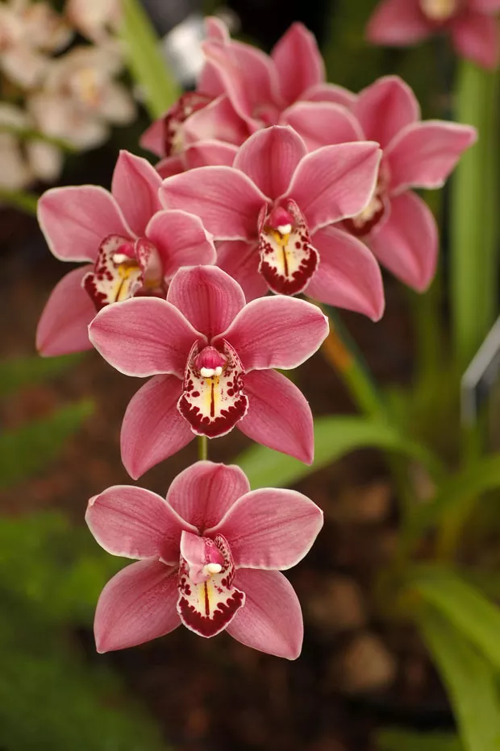

você ira aprender a como cuidar de uma orquidea!

Para cuidar de uma orquídea, você deve regá-la com moderação, garantir boa drenagem, e fornecer luz indireto.
As orquídeas são unanimidade quando o assunto é favoritismo: todo mundo se rende aos encantos delas! No entanto, apesar de serem uma das plantas mais cultivadas, elas geram muitas dúvidas. O que muitas pessoas não sabem é que cultivar orquídeas é mais fácil do que se pensa! Mostraremos, a seguir, dicas e recomendações de cuidados para garantir uma ótima floração dos seus vasos de orquídea ou um lindo orquidário.
 Navegua aqui
Navegua aqui